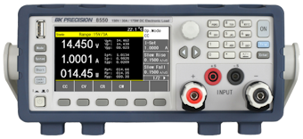
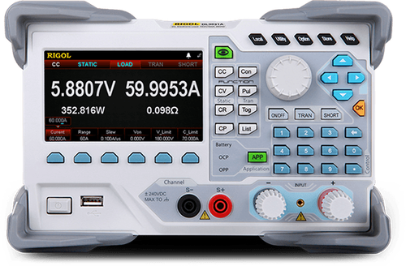

Electronic Load (ELoad)#
Using InstroELoad for SCPI-based programmable electronic loads
InstroELoad provides a unified interface for programmable electronic loads. This class is initialized with a vendor-specific driver (BK85XXB, …), and provides the vendor-agnostic API (set_mode, set_level, get_voltage, …).
Creating an InstroELoad#
from instro.eload.drivers.bk_85xxb import BK85XXB
from instro.eload import InstroELoad
eload = InstroELoad(
name="myELoad",
driver=BK85XXB(visa_resource="USB0::0x0614::0x0960::8514B12345::INSTR"),
)
Supported Vendors#


If your vendor or model is not listed, see Custom Driver Development, or open a Driver Request issue on GitHub.
Example#
More examples found in Examples
Details#
The following presents details about the InstroELoad. Specific driver details can be found on their pages.
Driver Composition#
An InstroELoad is built from a concrete driver:
InstroELoad("name", driver=BK85XXB(visa_resource="USB0::..."))
BK85XXBowns the connection setup and vendor-specific command mapping.InstroELoadowns the category-level workflow: measurements, commands, publishers, the background daemon.
Lifecycle#
The typical InstroELoad workflow:
Construct: instantiate the vendor driver and pass it to
InstroELoad.open(): establishes the VISA connection.Configure and measure: set operating mode, level, range, and read measurements.
start(): begins a periodic background daemon. (Optional)stop(): ends the background daemon (if started).close(): disconnects from hardware.
Operating Modes#
Electronic loads can operate in four modes:
CC (Constant Current): the load draws a constant current regardless of voltage
CV (Constant Voltage): the load maintains a constant voltage across its terminals
CR (Constant Resistance): the load simulates a constant resistance
CP (Constant Power): the load draws constant power
Note
Mode Configuration Required
The operating mode must be set using set_mode() before you can configure the level or range. Not all electronic loads support all four modes. Consult your instrument’s manual.
set_range() support depends on the driver. BK85XXB supports CC and CV, and auto-ranges CP and CR from the level value. RigolDL30xx supports CC, CV, and CR. In other modes, set_range() raises NotImplementedError.
Init from a Config File#
InstroELoad can also be constructed directly from a JSON config file, which removes the need to write any Python setup code:
from instro.eload import InstroELoad
eload = InstroELoad(config="bench_eload.json")
Where bench_eload.json contains:
{
"version": 1,
"instrument": "InstroELoad",
"device": {
"name": "bench_eload",
"description": "Bench electronic load",
"manufacturer": "B&K Precision",
"model": "8514B"
},
"driver": {
"connection_type": "visa",
"name": "BK85XXB",
"visa": {
"visa_resource": "ASRL3::INSTR",
"serial_config": {
"baud_rate": 9600,
"data_bits": 8,
"parity": "N",
"stop_bits": 1
}
}
},
"load": {
"mode": "CC",
"level": 1.5,
"range": 5.0,
"slew_rate": {
"direction": "BOTH",
"rate": 0.5
}
},
"timing": {
"poll_interval": 1.0
},
"publishers": [
{
"type": "NominalCorePublisher",
"dataset_rid": "<dataset_rid>"
}
]
}
See Config Files for the full field reference.
Custom Driver Development#
For more information on writing a custom driver, see Custom Driver Development.